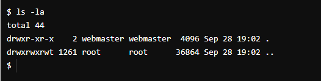
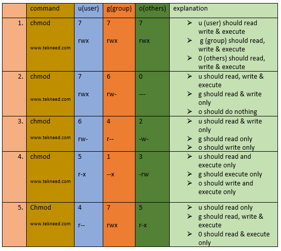
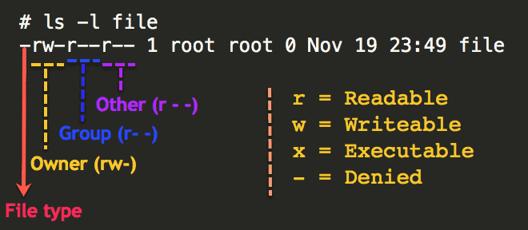
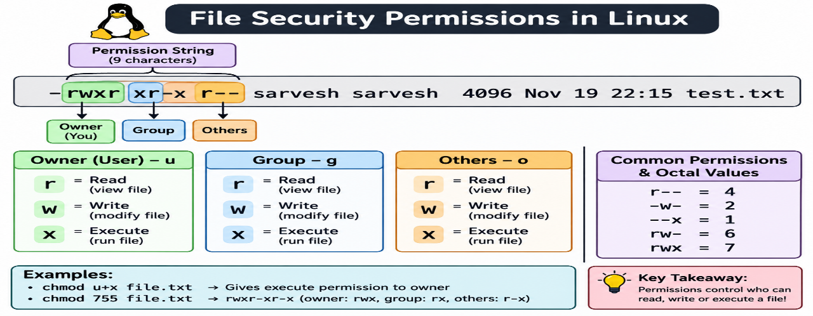
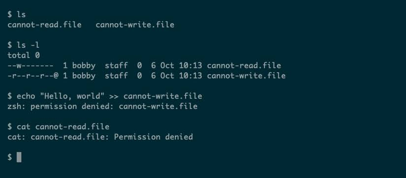
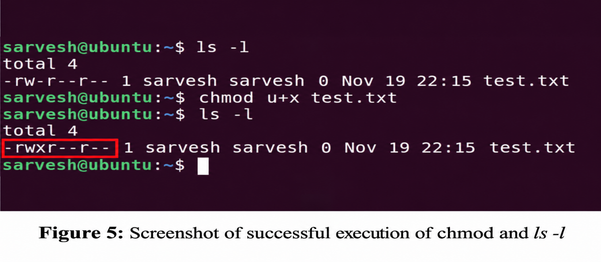

The Meaning of 777, 755, 644 and 600
A Practical Guide to Linux File Access and Security
This blog explains how Linux and Unix-based operating systems control access to files and directories using octal file permissions. It describes the three permission types (read, write and execute), the three user categories (owner, group and others), and how the values 4, 2 and 1 are added to form permission codes such as 777, 755, 644 and 600.
The practical part demonstrates the chmod command for setting permissions and the ls -l command for checking them. It also explains why correct permissions are important for protecting information and maintaining system security.
Every file and directory in a computer system contains information that needs to be protected from unauthorized access. In Linux and Unix-based operating systems, file permissions determine who can read, modify or execute files.
Octal permission codes such as 777, 755, 644 and 600 provide a compact way to represent these access rights. Understanding these concepts helps users protect information and maintain a secure computer system.
Keywords: Linux Permissions, Octal Permissions, File Security, Access Control, Read, Write, Execute, chmod.

Figure 1: Linux file permissions overview
File permissions act as a security barrier. They help control who can view information, change file contents, run programs or access directories.
| Category | Meaning |
|---|---|
| Owner (User) | The user who owns the file or directory. |
| Group | A set of users who share assigned access rights. |
| Others | All users who are neither the owner nor members of the assigned group. |

Figure 2: Owner, Group and Others
| Permission | Symbol | Value | Meaning |
|---|---|---|---|
| Read | r | 4 | Allows viewing file contents. |
| Write | w | 2 | Allows modifying file contents. |
| Execute | x | 1 | Allows running a file or accessing a directory. |

Figure 3: Read, Write and Execute permissions
Octal permissions are calculated by adding the numerical values of read, write and execute permissions.
| Permission Combination | Calculation | Octal Value |
|---|---|---|
| --- | 0 | 0 |
| --x | 1 | 1 |
| -w- | 2 | 2 |
| -wx | 2 + 1 | 3 |
| r-- | 4 | 4 |
| r-x | 4 + 1 | 5 |
| rw- | 4 + 2 | 6 |
| rwx | 4 + 2 + 1 | 7 |
| Code | Owner | Group | Others | Meaning |
|---|---|---|---|---|
| 777 | rwx | rwx | rwx | Everyone has full access. |
| 755 | rwx | r-x | r-x | Owner has full access; others can read and execute. |
| 644 | rw- | r-- | r-- | Owner can modify; others can read. |
| 600 | rw- | --- | --- | Only the owner can read and write. |

Figure 4: Octal permission values
The chmod command is used to change the permissions of files and directories in Linux.
chmod 755 file.txt
chmod 644 file.txt
chmod 600 private.txt
The ls -l command displays detailed information about files, including their permissions, owner, group, size and modification date.
ls -l
Example output:
-rwxr-xr-x 1 user group 1200 file.txt
-rw-r--r-- 1 user group 500 notes.txt

Figure 5: Screenshot of successful execution of chmod and ls -l

Figure 6: Linux file security permissions
Octal file permissions are an important part of Linux and Unix-based system security. They provide a simple numerical method for controlling who can read, write and execute files and directories.
Understanding 777, 755, 644 and 600 helps users choose suitable access settings. By using chmod carefully, reviewing permissions and following the principle of least privilege, users can protect information and reduce unauthorized changes.